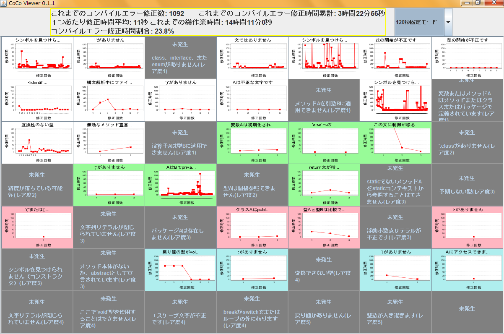
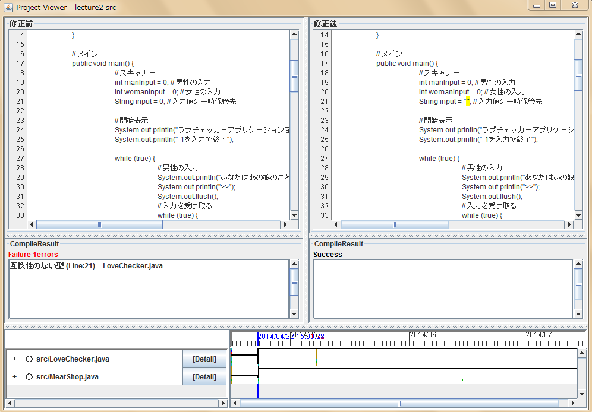

どんな人のためのシステム？
コンパイルエラー修正にまだ慣れていない人やコンパイルエラー修正を難しいと感じている人のため支援システムです．自分自身のコンパイルエラー修正を分析することで，コンパイルエラー発生原因・修正方法の理解を助けます．
プログラムを十分書いてきた人，コンパイルエラー修正に十分慣れた人でも，自分のコンパイルエラー修正を見直すことで自分の修正の癖や誤った修正方法に気づき，コンパイルエラー修正プロセスを改善できます．
CocoViewerとは
CocoViewerはコンパイルエラー修正履歴分析システムです．コンパイルエラーの修正ログを自動的に収集し，コンパイルエラー修正時間の折れ線グラフ(修正時間推移グラフ)を表示します．
修正時間推移グラフを分析することにより，自分のコンパイルエラー修正についての学習状況を分析することが可能です．
起動方法
CocoViewerを起動するためには，先にコンパイルエラー修正情報の収集が必要になります．RonproPlugin内のCreate CocoDataをクリックして，ダイヤログが消えるまでお待ちください．
注意：コンパイルエラー修正情報の収集には時間がかかる場合があります．10分程度お待ちください
コンパイルエラー修正情報の収集が終わったら，Open CocoViewerをクリックしてください．CocoViewerメイン画面が表示されます．
補足ですが，現在のバージョンではコンパイルエラー修正情報の収集中に，プログラミング作業を行うことが出来るようになりました（2013年度のバージョンでは出来ませんでした．
画面の説明
システムを起動すると，先ほどのCocoViewerメインウィンドウが表示されます．
CocoViewerメインウィンドウでは，ヘッダー部分で全体のコンパイルエラー修正に関する情報が見られます．表形式で並んでいるグラフ一つ一つがコンパイルエラーの種類に対応しています．
並んでいる修正グラフをクリックすると，修正詳細ウィンドウが表示されます．修正詳細ウィンドウでは，拡大された修正グラフとコンパイルエラー修正に関する詳細なテーブル（修正詳細テーブル）を確認することができます．修正詳細テーブルでは発生回数，発生した時刻，コンパイルエラーを修正したプログラム名，修正までかかった時間が表示されます．

修正詳細テーブルの行をクリックすると，ソースコード比較ウィンドウが表示されます．ソースコード比較ウィンドウではコンパイルエラー発生時の状況を再現することができます．デフォルトではプロジェクト単位のソースコードが開きます
左上側が修正前のソースコード，真ん中左が修正前のソースコードをコンパイルした結果になります．
右上側が修正後のソースコード，真ん中右が修正後のソースコードをコンパイルした結果になります．
コンパイルした結果では，実際に発生していたコンパイルエラー，発生行数，どのプログラムで発生していたのか，という情報を得ることが出来ます．
下部のタイムラインを操作することで，エディタの操作を再現することができます．自分のコンパイルエラー修正過程を振り返る際に活用してください．
タイムラインはShiftボタンを押したまま，左クリックした状態でドラッグすると選択した範囲が拡大されます．青色のバーは修正前のソースコードに対応しており，左クリックしたままドラッグすることで動かすことが可能です．赤色のバーは修正後のソースコードに対応しており，右クリックしたままドラッグすることで動かすことが可能です．
青色，赤色のバーを移動させることにより，エディタの操作履歴が再現され，修正前．修正後のソースコードが変化します．
上記の画像でBulletの横にあるDetailボタンを押すと，Bulletクラスのソースコードのみが表示されます
プログラムの動きを追うために活用してください．

分析方法
CocoViewerでは修正グラフを分析することで，自分のコンパイルエラー修正の学習状況を認識することができます．
右下がり型
コンパイルエラー修正回数が増えるに従ってコンパイルエラー修正時間が短くなるパターンのグラフです．このコンパイルエラー修正の修正方法については理解できていると推測できます．右下がり型のグラフを増やせるように頑張りましょう．
振動型

コンパイルエラー修正回数に関わらず，コンパイルエラー修正時間が増減するパターンのグラフです．このコンパイルエラー修正の修正方法については理解が不十分であると推測できます．右下がり型グラフにしていくためにはソースコード比較ウィンドウなどを見て，コンパイルエラー修正前後で自分が何をしていたのかを振り返り，コンパイルエラー発生原因，修正方法を推測するとよいでしょう．
右上がり型

コンパイルエラー修正回数が増えるに従ってコンパイルエラー修正時間が長くなるパターンのグラフです．このコンパイルエラー修正の修正方法については全く理解ができていない，あるいは見当違いをしていると推測できます．現在の知識では解決が難しいコンパイルエラーなのかもしれません．
コンパイルエラーのレア度
コンパイルエラーのレア度は，コンパイルエラーの発生頻度を示しています．コンパイルエラーの発生頻度が低いものは，レア度が高くなります．
コンパイルエラー発生頻度は，2012年度情報社会学科向けに開講された講義「プログラミング」の受講者が発生させた全コンパイルエラー発生情報を用いています．